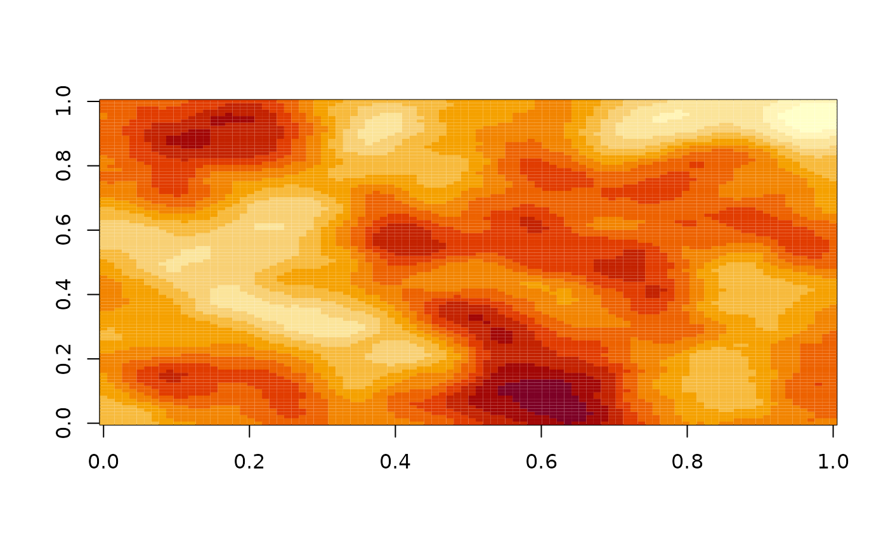
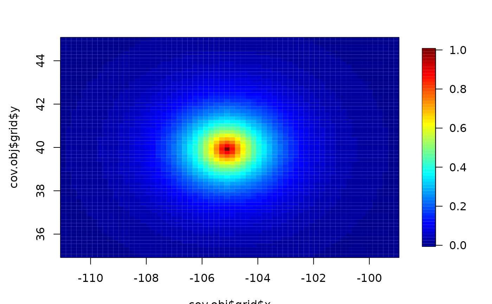
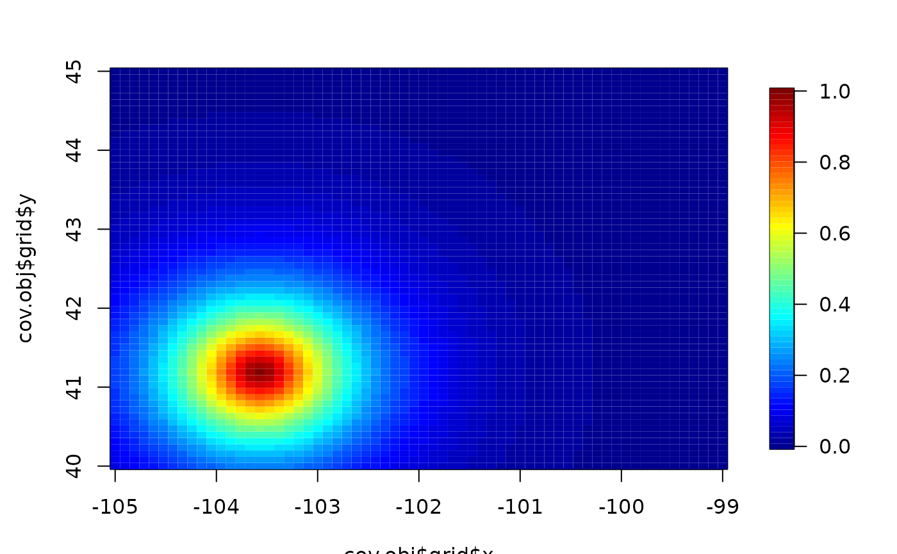
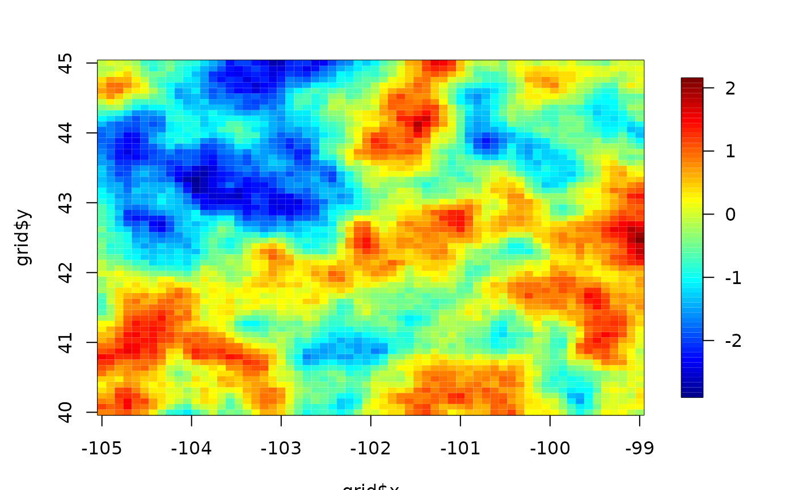

image.cov.RdGiven two sets of locations defined on a 2-d grid efficiently multiplies a cross covariance with a vector. The intermediate compuations (the setup) can also be used for fast simulation of the processes on a grid using the circulant embedding technique.
stationary.image.cov(ind1, ind2, Y, cov.obj = NULL, setup = FALSE,
grid, M=NULL,N=NULL,cov.function="stationary.cov", delta = NULL, cov.args = NULL, ...)
Exp.image.cov(ind1, ind2, Y, cov.obj = NULL, setup = FALSE, grid, ...)
Rad.image.cov(ind1, ind2, Y, cov.obj = NULL, setup = FALSE, grid, ...)
matern.image.cov(ind1, ind2, Y, cov.obj = NULL, setup = FALSE, grid,
M=NULL,N=NULL,aRange= 1.0, smoothness=.5, theta=NULL)
wendland.image.cov(ind1, ind2, Y, cov.obj = NULL,
setup = FALSE, grid, M = NULL, N = NULL, cov.args=NULL, ...)Matrix of indices for first set of locations this is a two column matrix where each row is the row/column index of the image element. If missing the default is to use all grid locations.
Matrix of indices for second set of locations. If missing this is taken to be ind2. If ind1 is missing ind2 is coerced to be all grid locations.
Vector to multiply by the cross covariance matrix. Y must be the same locations as those referred to by ind2.
Any additional arguments or parameters to the covariance function.
A list with the information needed to do the multiplication by convolutions. This is usually found by using the returned list when setup=T.
Name of the (stationary) covariance function.
If true do not do the multiplication but just return the covariance object required by this function.
A distance that indicates the range of the covariance when it has compact support. For example this is the aRange parameter in the Wendland covariance.
A grid list giving the X and Y grids for the image. (See example below.) This is only required if setup is true.
Size of x-grid used to compute multiplication (see notes on image.smooth for details) by the FFT. If NULL, the default for M is the largest power of 2 greater than or equal to 2*m where m is the length of the x component of the grid.
This will give an exact result but smaller values of M will yield an approximate, faster result.
Size of y-grid used to compute multiplication by the FFT.
Scale parameter for Matern.
Same as aRange.
Smoothness parameter for Matern (.5=Exponential)
Any arguments to pass to the covariance function in setting up the
covariance object. This is only required if setup is TRUE.
For stationary.image.cov one can include V a matrix reflecting
a rotation and scaling of
coordinates. See stationary.cov for details.
A vector that is the multiplication of the cross covariance matrix with the vector Y.
This function was provided to do fast computations for large numbers of spatial locations and supports the conjugate gradient solution in krig.image. In doing so the observations can be irregular spaced but their coordinates must be 2-dimensional and be restricted to grid points. (The function as.image will take irregular, continuous coordinates and overlay a grid on them.)
Returned value: If ind1 and ind2 are matrices where nrow(ind1)=m and
nrow(ind2)=n then the cross covariance matrix, Sigma, is an mXn matrix
(i,j) element is the covariance between the grid locations indexed at
ind1[i,] and ind2[j,]. The returned result is Sigma multiplied by Y. Note that
one can
always recover the coordinates themselves by evaluating the grid list at
the indices. E.g. If x and y are the grids for the X and Y
dimensions, cbind( x[ind1[,1]], y[ind1[,2])) will give
the coordinates associated with ind1.
Clearly it is better just to work
with ind1!
Functional Form: Following the same form as Exp.cov stationary.cov for irregular locations, the covariance is defined as phi( D.ij) where D.ij is the Euclidean distance between x1[i,] and x2[j,] but having first been scaled by aRange. Specifically,
D.ij = sqrt( sum.k (( x1[i,k] - x2[j,k]) /aRange[k])**2 ).
See Matern for the version of phi for the Matern family.
Note that if aRange is a scalar then this defines an isotropic covariance function.
Implementation: This function does the multiplication on the full grid efficiently by a 2-d FFT. The irregular pattern in Y is handled by padding with zeroes and once that multiplication is done only the appropriate subset is returned.
As an example assume that the grid is 100X100 let big.Sigma denote the big covariance matrix among all grid points ( If the parent grid is 100x100 then big.Sigma is 10K by 10K !) Here are the computing steps:
temp<- matrix( 0, 100,100)
temp[ ind2] <- Y
temp2<- big.Sigma%*% temp
temp2[ind1]
Notice how much we pad with zeroes or at the end throw away! Here the matrix multiplication is effected through convolution/FFT tricks to avoid creating and multiplying big.Sigma explicitly. It is often faster to multiply the regular grid and throw away the parts we do not need then to deal directly with the irregular set of locations.
Note: In this entire discussion Y is treated as vector. However if one has complete data then Y can also be interpreted as a image matrix conformed to correspond to spatial locations. See the last example for this distinction.
smooth.2d, as.image, krig.image, stationary.cov
# multiply 2-d isotropic exponential with aRange=4 by a random vector
junk<- matrix(rnorm(100*100), 100,100)
cov.obj<- stationary.image.cov( setup=TRUE,
grid=list(x=1:100,y=1:100),aRange=8)
result<- stationary.image.cov(Y=junk,cov.obj=cov.obj)
image( matrix( result, 100,100)) # NOTE that is also a smoother!

# to do it again, no setup is needed
# e.g.
# junk2<- matrix(rnorm(100**2, 100,100))
# result2<- stationary.image.cov(Y=junk2, cov.obj=cov.obj)
# generate a grid and set of indices based on discretizing the locations
# in the precip dataset
out<-as.image( RMprecip$y, x= RMprecip$x)
ind1<- out$ind
grid<- list( x= out$x, y=out$y)
#
# discretized x locations to use for comparison
xd<- cbind( out$x[ out$ind[,1]], out$y[ out$ind[,2]] )
# setup to create cov.obj for exponential covariance with range= 1.25
cov.obj<- stationary.image.cov( setup=TRUE, grid=grid, aRange=1.25)
# multiply covariance matrix by an arbitrary vector
junk<- rnorm(nrow( ind1))
result<- stationary.image.cov( ind1, ind1, Y= junk,cov.obj=cov.obj)
# The brute force way would be
# result<- stationary.cov( xd, xd, aRange=1.25, C=junk)
# or
# result<- stationary.cov( xd, xd, aRange=1.25) %*% junk
# both of these take much longer
# evaluate the covariance between all grid points and the center grid point
Y<- matrix(0,cov.obj$m, cov.obj$n)
Y[32,32]<- 1
result<- stationary.image.cov( Y= Y,cov.obj=cov.obj)
# covariance surface with respect to the grid point at (32,32)
#
# reshape "vector" as an image
temp<- matrix( result, cov.obj$m,cov.obj$n)
image.plot(cov.obj$grid$x,cov.obj$grid$y, temp)

# or persp( cov.obj$grid$x,cov.obj$grid$y, temp)
# check out the Matern
grid<- list( x= seq(-105,-99,,64), y= seq( 40,45,,64))
cov.obj<- matern.image.cov(
setup=TRUE, grid=grid, aRange=.55, smoothness=1.0)
Y<- matrix(0,64,64)
Y[16,16]<- 1
result<- matern.image.cov( Y= Y,cov.obj=cov.obj)
temp<- matrix( result, cov.obj$m,cov.obj$n)
image.plot( cov.obj$grid$x,cov.obj$grid$y, temp)

# Note we have centered at the location (grid$x[16],grid$y[16]) for this case
# using sim.rf to simulate an Matern field
look<- sim.rf( cov.obj)
image.plot( grid$x, grid$y, look)
